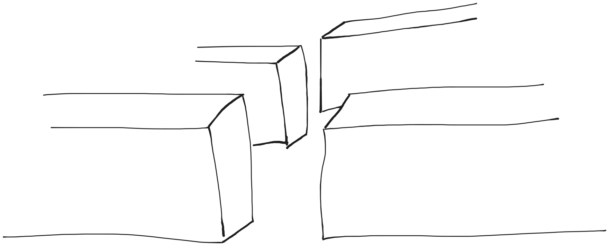
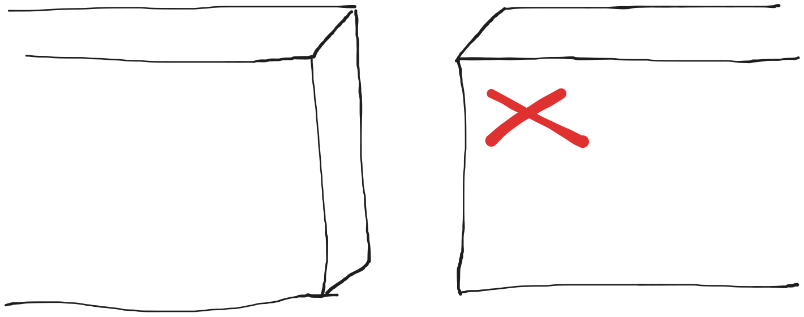
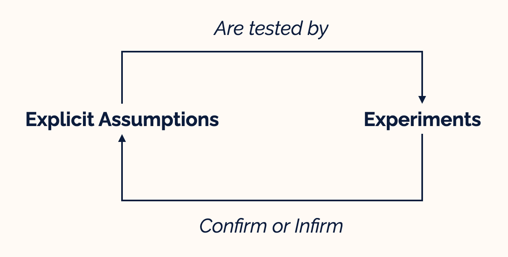
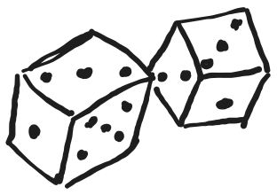

The science of debugging
PyData Amsterdam · September 20, 2024
About me
- ML engineer at
- Maintainer of
 @SdgJlbl
@SdgJlbl
What does an ML engineer do?
- Productionizing research code
- Implementing tooling to facilitate data scientist job
- Debugging
Everyone is debugging
There is a logical explanation to bugs.
Approaching debugging as
an experimental science
Experimental science = theory + experiments


Don't try to fix your bug
Understand what happens
Drawing your map
Drawing your map
You have assumptions about how your code is working
Make them explicit
Focus on the most obvious at first
Drawing your map
Divide and conquer
Drawing your map
Use documentation and architecture diagrams
But don't trust them
Using your map
Make some hypotheses about what is happening during the bug
Using your map
Follow the flow
Remember
At least one of your assumptions is wrong
Finding your way
Finding your way
Experiments:
What is actually happening when you run your code
Finding your way
Experiments are used to test your hypotheses
Finding your way
Be systematic
Trust nothing
Check everything
Finding your way
Inspect values at interfaces.
Finding your way
Focus on data, not the code flow.
Remember
It's all about putting your theory to the test.
Keeping track of your progress
How?
Scientists use a research log
Debugging log
- Write down experiment settings and results
- Write down your assumptions and hypotheses explicitly
- Write down ideas you can't follow right now

Debugging log is great to write incident retrospectives
Let's apply this approach to a toy example.
I iterate on cumulative lists:
[0], [0, 1], [0, 1, 2], ...
I add a special value at the beginning of each list: -100
def prepend(l: list, beginning: list = [-100]):
beginning.extend(l)
return beginning
for i in range(5):
zero_to_i = list(range(i))
l = prepend(zero_to_i)
print(len(l))
def prepend(l: list, beginning: list = [-100]):
beginning.extend(l)
return beginning
for i in range(5):
zero_to_i = list(range(i))
l = prepend(zero_to_i)
print(len(l))
i = 4
zero_to_i = [0, 1, 2, 3]
l = [-100, 0, 1, 2, 3]
Expected: 5
Observed: 11
Experiment 1
def prepend(l: list, beginning: list = [-100]):
beginning.extend(l)
return beginning
print(prepend([0, 1, 2]))
Hypothesis 1
prepend is adding -100 in front of the list.
[-100, 0, 1, 2]
Experiment 2
def prepend(l: list, beginning: list = [-100]):
beginning.extend(l)
return beginning
for i in range(5):
zero_to_i = list(range(i))
print(zero_to_i)
l = prepend(zero_to_i)
Hypothesis 2
Let's check the value of zero_to_i
[]
[0]
[0, 1]
[0, 1, 2]
[0, 1, 2, 3]
Experiment 3
def prepend(l: list, beginning: list = [-100]):
beginning.extend(l)
return beginning
for i in range(5):
zero_to_i = list(range(i))
l = prepend(zero_to_i)
print(l)
Hypothesis 3
Let's check the value of l
[-100]
[-100, 0]
[-100, 0, 0, 1]
[-100, 0, 0, 1, 0, 1, 2]
[-100, 0, 0, 1, 0, 1, 2, 0, 1, 2, 3]
Experiment 4
def prepend(l: list, beginning: list = [-100]):
beginning.extend(l)
return beginning
print(prepend([0, 1, 2]))
print(prepend([0, 1, 2]))
Hypothesis 4
prepend is always behaving in the same way.
1st print: [-100, 0, 1, 2]
2nd print: [-100, 0, 1, 2, 0, 1, 2]
Experiment 5
def prepend(l: list, beginning: list = [-100]):
print("l: ", l)
print("beginning: ", beginning)
beginning.extend(l)
return beginning
prepend([0, 1, 2])
prepend([0, 1, 2])
Hypothesis 5
The default argument beginning is always [-100].
l: [0, 1, 2]
beginning: [-100]
l: [0, 1, 2]
beginning: [-100, 0, 1, 2]
What is happening
- Default arguments are instantiated once.
- If a default argument is changed, the new value will be used as default for subsequent calls.
- beginning.extend(l)
- DO NOT use mutable default arguments.
Fixed code
def prepend(l: list, beginning: list | None = None):
if beginning is None:
beginning = [-100]
beginning.extend(l)
return beginning
for i in range(5):
zero_to_i = list(range(i))
l = prepend(zero_to_i)
Other useful tools for your adventure
Other useful tools for your adventure
Qualify the bug
Leverage temporality

Identify sources of randomnessInvest in tooling
Enroll another adventurer
Architect your maze better
The science of debugging
- There's a logical explanation.
- Do not fix the bug, understand what happens.
- Trust nothing, check all your assumptions.
- Use a debugging log to track your progress.